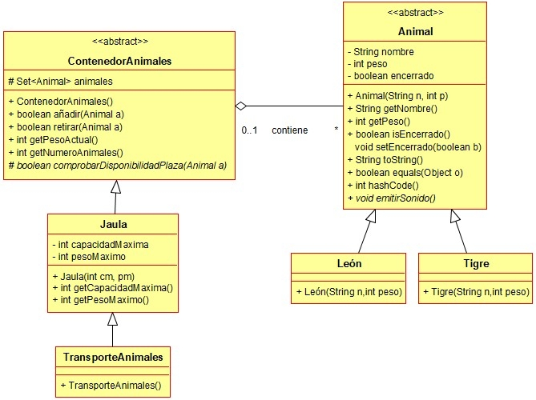

Ejercicio 24 : Programa en el mismo paquete daw.zoo la clase ContenedorAnimales, que representa a cualquier cosa que pueda guardar un conjunto de animales.

-
La propiedad “animales” es un conjunto con los animales que hay en el contenedor.
-
añadir: Añade un animal al contenedor, solo si hay una plaza disponible para él. Esto nos lo devuelve el método auxiliar “comprobarDisponibilidadPlaza”. En caso de añadirlo, devuelve true y si no, devuelve false. En caso de añadir el animal, este deberá ser marcado como enjaulado.
-
retirar: Retira el animal del contenedor. Si el animal pasado como parámetro no está en el contenedor, devuelve false. En otro caso, devuelve true.
-
getPesoActual: Devuelve el peso de todos los animales que hay en el contenedor.
-
getNumeroAnimales: Devuelve el número de animales que hay en el contenedor.
-
comprobarDisponibilidadPlaza: Se implementará en las clases hijas para saber si el animal recibido como parámetro puede ser añadido o no, al contenedor.